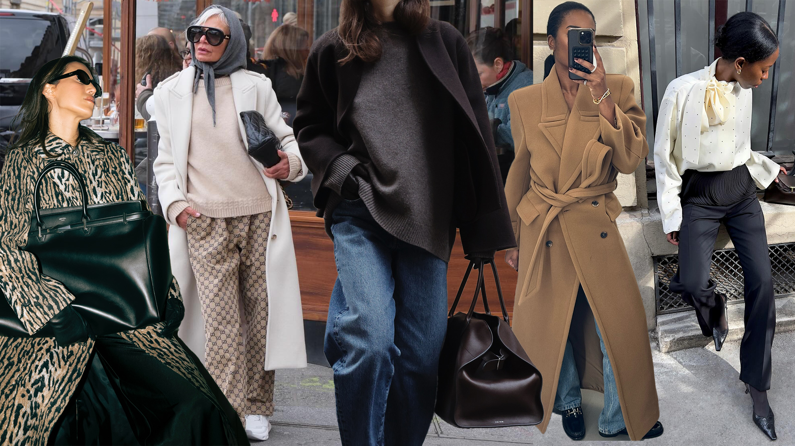

Summer Linen
Breathable dresses, relaxed trousers, and soft neutral layers for warm days.
Curated looks for summer linen, winter tailoring, and transitional dressing.
Breathable dresses, relaxed trousers, and soft neutral layers for warm days.

Structured coats, charcoal suiting, and warm wool textures for colder months.

Pieces that move between seasons with minimal effort and maximum polish.